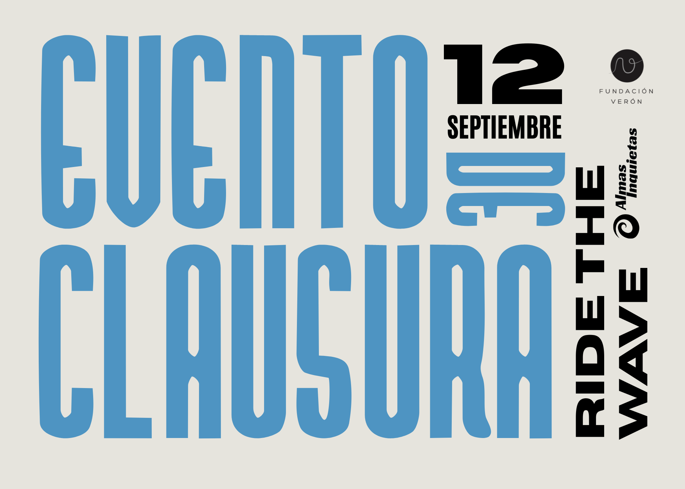
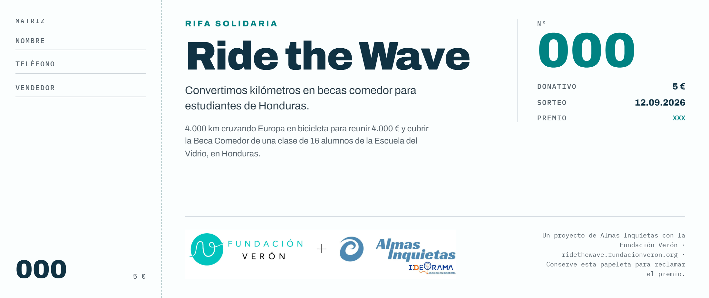

Ride the Wave
Ride the Wave


Convertir kilómetros en becas.
Turn kilometres into scholarships.
Alejandro cruza Europa en bicicleta —de Praga a Madrid, 4.000 km en 70 días— para financiar la beca comedor de 16 niños en Honduras a través de la Fundación Verón. Activum se suma como empresa colaboradora, y necesitaba un lenguaje visual para contarlo.
Alejandro cycles across Europe —Prague to Madrid, 4,000 km in 70 days— to fund the school-meal scholarship of 16 children in Honduras through Fundación Verón. Activum joined as a collaborating company, and needed a visual language to tell the story.
Cartelería para cada momento del reto.
A poster for every moment of the challenge.
Diseñé la imagen de la causa y el material para acompañar todo el recorrido, con una identidad propia que conecta con la de Fundación Verón y Almas Inquietas sin perder la de Activum.
I designed the cause's visual identity and the material to accompany the whole journey, with its own look that connects with Fundación Verón and Almas Inquietas without losing Activum's.
- Cartel del evento de clausura, en dos versiones
- Closing-event poster, in two versions
- Papeleta de la rifa solidaria
- Charity raffle ticket
- Piezas para seguir el reto en redes
- Pieces to follow the challenge on social
Un reto que se sigue de un vistazo.
A challenge you can follow at a glance.
Todo el material listo para acompañar la causa de principio a fin, del primer kilómetro al evento de clausura en Madrid.
All the material ready to follow the cause from start to finish, from the first kilometre to the closing event in Madrid.
El reto se sigue en directo en la web oficial.
Follow the challenge live on the official site.
Alejandro comparte su ruta día a día, y Activum libera su donación a medida que el equipo suma kilómetros.
Alejandro shares his route day by day, and Activum releases its donation as the team logs kilometres.

